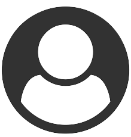

<mat-sidenav-container class="sidenav-container">
  <mat-sidenav
    #drawer
    class="sidenav"
    fixedInViewport
    [attr.role]="(isHandset$ | async) ? 'dialog' : 'navigation'"
    [mode]="(isHandset$ | async) ? 'over' : 'side'"
    [opened]="(isHandset$ | async) === false"
  >
    <mat-toolbar>REPORTS</mat-toolbar>
    
  </mat-sidenav>

  <mat-sidenav-content>
    <mat-toolbar color="primary" style="background-color: rgb(186, 152, 255)">
      <button
        type="button"
        aria-label="Toggle sidenav"
        mat-icon-button
        (click)="drawer.toggle()"
        *ngIf="isHandset$ | async"
      >
        <mat-icon aria-label="Side nav toggle icon">menu</mat-icon>
      </button>

      <span class="header">
        <div class="left-item">
          <div class="input-container">
            <input class="searchbar" />
            <i class="fa fa-search"></i>
          </div>
        </div>
      </span>
      <div class="right-items">
        <div>
          <p class="logout">Log Out</p>
        </div>
        <div>
          
        </div>
      </div>
    </mat-toolbar>

    <app-analytic></app-analytic>
  </mat-sidenav-content>
</mat-sidenav-container>
